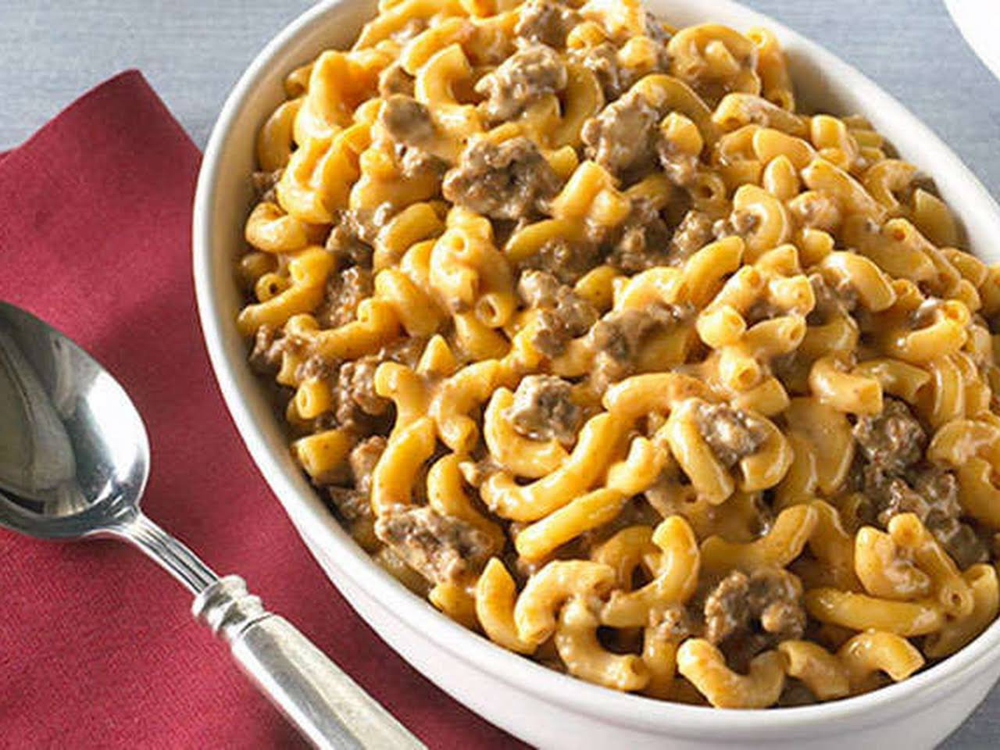

Beefy Mac

Description
This is some real white trash food, y'all. It's ground beef mixed with boxed deluxe Mac and Cheese. We like to add a vegetable so that we are eating a vegetable.
Ingredients
- Ground beef, 1 lb.
- Deluxe macaroni and cheese, 2 boxes with sauce packets
- Steam-in-bag broccoli, 1 bag
- Salt and pepper to taste
- Optional: Garlic powder, other herbs and spices
Steps
- Bring a suitable quantity of water to a boil in a large pot.
- Steam the broccoli in the microwave according to the package directions.
- Brown the ground beef in a skillet over medium-high heat, seasoning it with salt, pepper, and whatever other seasonings you prefer.
- When the beef is browned, add the steamed broccoli and combine.
- When the water boils, add the macaroni and cook until al dente.
- Drain the macaroni and return to the pot. Add cheese packets and meat and broccoli mixture. Mix thoroughly and serve.